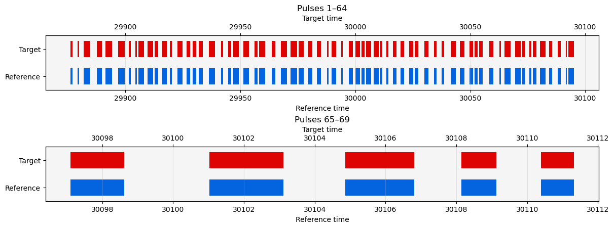
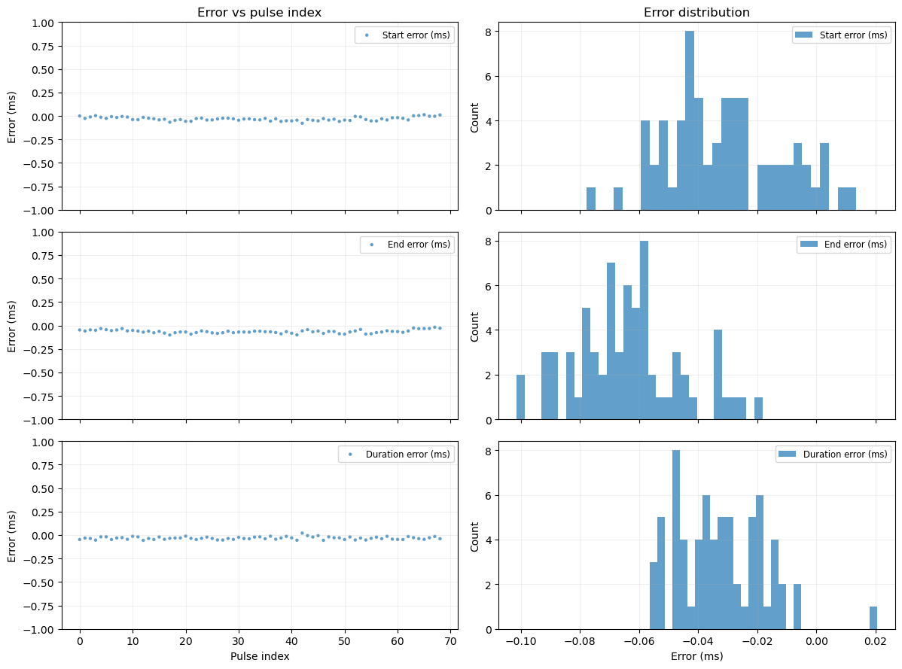
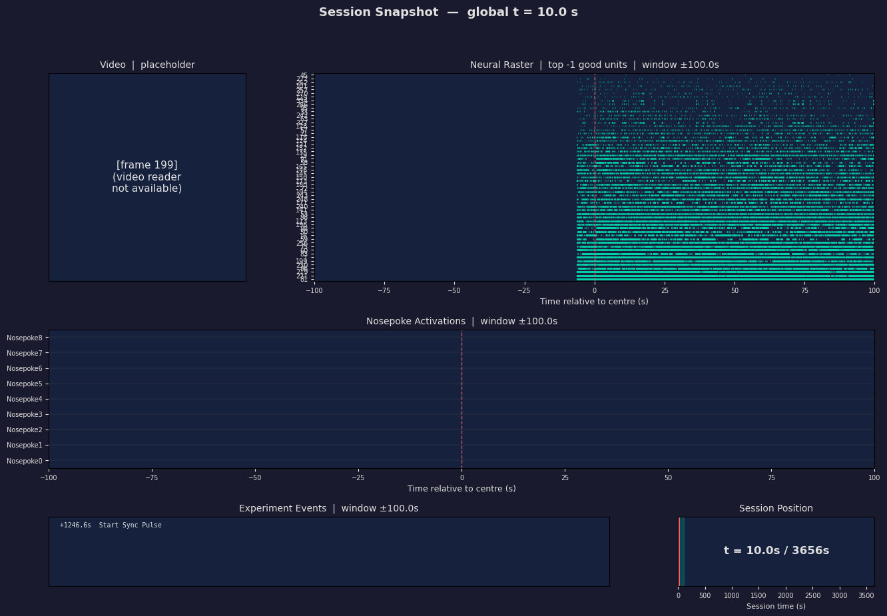

data-conduit: Overview and Workflow Guide#
A Python Toolkit for Constructing Standardised, Reusable Data Pipelines for Multi-Stream Experimental Data
Table of Contents#
Part 1: IO — Discovering and reading files
1. What is data-conduit?#
data-conduit is a Python toolkit for converting outputs from multiple data acquisition sources into consistent, unified data structures that can be used for subsequent analysis.
This library was originally designed for experimental neuroscience labs working with the Bonsai and HARP ecosystems as part of their workflow, with raw experimental data stored in directories based on the NeuroBlueprint standard. However, most functionalities provided by data-conduit are modular and flexible, and should be compatible with other data acquisition platforms, as well as
other data conventions.data-conduit is concerned with using a consistent structure to automate data processing workflows, rather than enforcing any one particular format.
These workflows are designed to integrate with tools from the broader neuroinformatics.dev ecosystem, including datashuttle for data management and movement for pose tracking analysis.
The functionality of data-conduit can be broadly grouped into the following categories:
Automated discovery and reading of data files from directory trees.
Processing and conversion of raw data into unified data structures (nested dicts of DataFrames, xarray DataArrays).
Flexible querying utilities to interact with unified data structures across devices, registers, and data types.
Temporal alignment of different experimental data streams (e.g. Bonsai/HARP ↔ Neuropixels via TTL synchronisation).
Segmentation of data using event-based windowing and boolean run-length encoding.
2. How does data-conduit work?#
To explain how data-conduit works, it is helpful to first explain how data from HARP devices would normally need to be extracted using the harp-python API.
When working with HARP devices, users will find that their experimental data is organised into a hierarchical folder structure, with each device having its own subfolder containing multiple .bin files corresponding to different registers. The naming convention follows a consistent pattern: DeviceName_RegisterAddress_Timestamp.bin.
A user wanting to access a specific register’s data must:
Create a device reader from a YAML schema file
Know the correct register name and address
Construct the correct file path
Read the binary data into a DataFrame
[1]:
#======== How harp-python works natively
import harp
device_yaml_path = '/home/callum/Keshavarzi-Lab-Workspace/data-conduit/device.yml'
device_register_path = '/home/callum/Keshavarzi-Lab-Workspace/data-conduit/JPVA191B_23102025_run1_g0/bonsai/Behavior4/Behavior4_32_1904-01-01T02-00-00.bin'
reader = harp.create_reader(device_yaml_path)
reader.DigitalInputState.read(device_register_path)
[1]:
| DIPort0 | DIPort1 | DIPort2 | DI3 | |
|---|---|---|---|---|
| Time | ||||
| 8477.558592 | True | False | False | False |
| 8477.641888 | False | False | False | False |
| 8477.706016 | True | False | False | False |
| 8477.838816 | False | False | False | False |
| 9536.453216 | False | True | False | False |
| 9536.747008 | False | False | False | False |
The Problem:
Whilst these tools provide a basic framework for accessing HARP device data, users will often find themselves working with experiment logs containing multiple devices and multiple registers per device, as well as needing to collate data across sessions, devices, and data types. Using the above approach requires manually repeating these steps for every register of interest across every device and session, which both a time-consuming and error-prone process.
The Solution:
data-conduit exploits the one thing that is consistent across all experimental sessions: the directory structure itself.
For example, data about a particular component connected to a HARP board will always reside at [device]/[register]/columns. By defining a mapping that specifies where each variable of interest is located within the experimental directory; such as by using device, register, and column identifiers, the library can automatically discover, load, and organise all relevant data into consistent structures that mirror the physical layout of the rig.
This means users work with stable variable names instead of file paths. The same code works unchanged across sessions, rigs, and experiments, as long as the directory layout is consistent.
3. An overview of data-conduit’s modules#
Package structure#
data_conduit/
├── io/ # File discovery and reading
│ ├── io_core.py # collect_folders, collect_file_paths, collect_dfs
│ └── readers.py # read_csv, read_harp_bin, read_json, etc.
├── harptools/ # HARP-specific loading
│ └── harptools_core.py # collect_harp_dfs
├── utils/ # Selector utilities
│ └── utils_core.py # starts_with, _matches_selector, _parse_selectors
├── datasource/ # Generic object layer
│ ├── datasource_core.py # DataSource base class
│ ├── devices.py # Device, SoundCard, CameraStart, Camera0Frames
│ └── filetypes.py # FileTypeData, ExperimentEvents, RotationData, etc.
├── multisource/ # Multi-stream alignment layer
│ ├── multisource_core.py # MultiSource
│ └── multidevice.py # MultiDevice, Nosepoke
├── virtualarrays/ # DataArray construction + querying
│ ├── virtual_arrays_core.py # construct_data_array, construct_lookup_array
│ ├── base_queries.py # ulookup
│ └── custom_lookup_template.py # .ulookup accessor
├── timestamps/ # Timestamp extraction
│ └── timestamps_core.py
├── globaltimes/ # Global clock + index mapping
│ └── globaltimes_core.py
├── ttlsync/ # TTL pulse alignment
│ ├── ttlsync_core.py # extract_ttl_segments, TTLSyncModel, etc.
│ └── ttl_visualisation.py
├── segment/ # Event windowing + segmentation
├── validators/ # Data validation
└── deprecated/ # Legacy compatibility wrappers
How the layers connect#
data-conduit is organised into three conceptual layers, each building on the one below:
Layer 1| IO (functions): Low-level utilities that discover directories, find files, and read them into DataFrames. These are pure functions with no state.
Layer 2| Object layer (classes): Classes that use the IO layer to load data and then organise it into named outputs. There are two families:
DataSource → Device / FileTypeData: For cases where each output maps to a single location in the directory tree (one device, one register). Produces a dict of named
xr.DataArrayobjects.MultiSource → MultiDevice: For cases where a single output combines data from multiple locations (e.g. nosepoke activations spread across multiple HARP boards). Produces unified DataArrays with virtual coordinate lookup.
Layer 3| Alignment & analysis (functions + classes): Temporal alignment (TTL sync, global clock), segmentation, and querying utilities that operate on the DataArrays produced by Layer 2.
Layer |
Module |
Key exports |
Purpose |
|---|---|---|---|
IO |
|
|
Walk directories, read files into nested dicts |
IO |
|
|
HARP-specific wrapper: collapse, rekey, filter |
Object |
|
|
Generic: dfs_dict → named DataArrays |
Object |
|
|
HARP device loading + DataSource |
Object |
|
|
CSV/JSON/YAML loading + DataSource |
Object |
|
|
Virtual-map aligned multi-stream arrays |
Object |
|
|
HARP loading + MultiSource |
Query |
|
|
Query DataArrays by virtual coordinates |
Align |
|
|
TTL pulse alignment between clock domains |
Align |
|
|
Shared timebase + index mapping |
4. Part 1: IO| Discovering and reading files#
The IO layer provides the building blocks that every higher-level class uses internally. This is central to much of the rest of the library, as every class in data-conduit ultimately calls these functions at some stage.
4.1 Setup#
[2]:
#======== User-Configurable Paths ==============================================
experiment_directory_path = '/home/callum/Keshavarzi-Lab-Workspace/data-conduit/Misc/2025-10-14T18-24-42'
harp_device_yaml_path = '/home/callum/Keshavarzi-Lab-Workspace/data-conduit/device.yml'
soundcard_yaml_path = '/home/callum/Keshavarzi-Lab-Workspace/data-conduit/soundcard.yml'
npx_sync_path = '/home/callum/Keshavarzi-Lab-Workspace/data-conduit/Misc/sync_channel_1014.npy'
4.2 Directory discovery#
A typical Bonsai experiment produces a directory tree like:
experiment/
├── Behavior0/
│ └── Behavior0/
│ ├── Behavior0_32_2024-01-01T12-00-00.bin
│ └── Behavior0_34_2024-01-01T12-00-00.bin
├── Behavior1/ ...
├── SoundCard/ ...
├── ExperimentEvents/
│ └── ExperimentEvents.csv
└── VideoData/
└── VideoData.csv
collect_folders lists subdirectories. collect_file_paths finds files matching given extensions.
[3]:
from data_conduit.io import collect_file_paths, collect_folders
[4]:
# List all top-level folders
folders = collect_folders(experiment_directory_path)
print('Top-level folders:')
for f in folders:
print(f' {f.name}')
print()
# Find all .bin files
bin_files = collect_file_paths(base_path= experiment_directory_path, file_pattern='*.bin')
print(f'Found {len(bin_files)} .bin files (showing first 5):')
for p in bin_files:
print(f' {p}')
Top-level folders:
Behavior0
Behavior1
Behavior2
Behavior3
Behavior4
Behavior5
ExperimentEvents
InnerRotation
NosepokeRotation
OuterRotation
SessionSettings
SoundCard
VideoData
VisualEnvironment
Found 7 .bin files (showing first 5):
Behavior0
Behavior1
Behavior2
Behavior3
Behavior4
Behavior5
SoundCard
4.3 collect_dfs| the core directory walker#
collect_dfs is the engine behind everything else. It walks a directory tree, reads every file it can, and returns a nested dictionary that mirrors the folder structure, where each leaf is a DataFrame.
Users control behaviour with two things:
``readers``: a dict mapping file extensions to reader functions (e.g.
{'.csv': read_csv})``l{n}_selector``: level selectors that filter which folders/files are included at each depth
The result is always a nested dict. This is the fundamental data structure that flows through the entire library.
[5]:
from data_conduit.io import collect_dfs, read_csv
# Load all CSV files from the experiment directory
csv_dfs = collect_dfs(
base_path=experiment_directory_path,
readers={'.csv': read_csv},
verbose=True,
)
print('\nLoaded structure:')
for key, value in csv_dfs.items():
if isinstance(value, dict):
print(f' {key}/ -> {list(value.keys())}')
else:
print(f' {key} -> {type(value).__name__} {getattr(value, "shape", "")}')
Failed to read /home/callum/Keshavarzi-Lab-Workspace/data-conduit/Misc/2025-10-14T18-24-42/VisualEnvironment/VisualEnvironment_1904-01-01T08-00-00.csv with reader for .csv: Expected 2 fields in line 3, saw 6. Error could possibly be due to quotes being ignored when a multi-char delimiter is used.
Loaded structure:
Behavior0/ -> []
Behavior1/ -> []
Behavior2/ -> []
Behavior3/ -> []
Behavior4/ -> []
Behavior5/ -> []
ExperimentEvents/ -> ['ExperimentEvents_1904-01-01T08-00-00']
InnerRotation/ -> ['InnerRotation_1904-01-01T08-00-00']
NosepokeRotation/ -> ['NosepokeRotation_1904-01-01T08-00-00']
OuterRotation/ -> ['OuterRotation_1904-01-01T08-00-00']
SessionSettings/ -> []
SoundCard/ -> []
VideoData/ -> ['VideoData_1904-01-01T08-00-00']
VisualEnvironment/ -> []
4.4 Level selectors| filtering the directory tree#
Level selectors filter at any depth of the directory tree. They accept:
A string: exact match (
l0_selector='Behavior0')A list: match any item (
l0_selector=['Behavior0', 'Behavior1'])A callable: custom logic (
l0_selector=starts_with('Behavior'))None: include everything (default)
The starts_with helper is particularly useful for Bonsai’s naming convention where Behavior0, Behavior1, etc. share a common prefix.
[6]:
from data_conduit.utils import starts_with
# Load only ExperimentEvents CSVs
events_only = collect_dfs(
base_path=experiment_directory_path,
readers={'.csv': read_csv},
l0_selector=starts_with('ExperimentEvents'),
)
print('Filtered to ExperimentEvents:', list(events_only.keys()))
# Load only Behavior folders
behavior_csvs = collect_dfs(
base_path=experiment_directory_path,
readers={'.csv': read_csv},
l0_selector=starts_with('Behavior'),
)
print('Filtered to Behavior*:', list(behavior_csvs.keys()))
Filtered to ExperimentEvents: ['ExperimentEvents']
Filtered to Behavior*: ['Behavior0', 'Behavior1', 'Behavior2', 'Behavior3', 'Behavior4', 'Behavior5']
4.5 Readers| adding custom file formats#
Any function with the signature (path, **kwargs) -> DataFrame can be used as a reader. Just map it to a file extension. The built-in readers cover .csv, .json, .bin (HARP), .jsonl, .yml/.yaml.
[7]:
import pandas as pd
# Example: custom tab-separated reader
def read_tsv(path, **kwargs):
return pd.read_csv(path, sep='\t', index_col=0, **kwargs)
# Use it like any built-in reader:
# tsv_dfs = collect_dfs(base_path, readers={'.tsv': read_tsv})
# You can also mix readers for different extensions:
# mixed_dfs = collect_dfs(base_path, readers={'.csv': read_csv, '.tsv': read_tsv})
4.6 collect_harp_dfs| HARP-specific loading#
collect_harp_dfs wraps collect_dfs for the specific needs of HARP binary data. It:
Calls
collect_dfswith the HARP.binreader and adevice_typeprefix filterCollapses Bonsai’s duplicated device folders (
Behavior0/Behavior0/→Behavior0/)Rekeys file stems from
Behavior0_32_timestampto just32(the register address)Filters to only the registers you asked for
Warns about any expected devices or registers that are missing
The result is a clean {device: {register: DataFrame}} dict.
[8]:
from data_conduit.harptools import collect_harp_dfs
behavior_dfs = collect_harp_dfs(
base_path=experiment_directory_path,
harp_device_yaml_path=harp_device_yaml_path,
device_type='Behavior',
device_registers={'Behavior0': ['32', '34'], 'Behavior1': ['32', '34']},
verbose=True,
)
print('\nResult:')
for dev, regs in behavior_dfs.items():
for reg, df in regs.items():
print(f' {dev}/{reg}: {df.shape}')
display(df.head(3))
Failed to read /home/callum/Keshavarzi-Lab-Workspace/data-conduit/Misc/2025-10-14T18-24-42/Behavior4/Behavior4_1904-01-01T08-00-00.bin with reader for .bin: invalid literal for int() with base 10: '1904-01-01T08-00-00'
Failed to read /home/callum/Keshavarzi-Lab-Workspace/data-conduit/Misc/2025-10-14T18-24-42/Behavior5/Behavior5_1904-01-01T08-00-00.bin with reader for .bin: invalid literal for int() with base 10: '1904-01-01T08-00-00'
Warning: expected register '32' not found for device 'Behavior0'.
Warning: expected register '32' not found for device 'Behavior1'.
Result:
Behavior0/34: (283, 14)
| DOPort0 | DOPort1 | DOPort2 | SupplyPort0 | SupplyPort1 | SupplyPort2 | Led0 | Led1 | Rgb0 | Rgb1 | DO0 | DO1 | DO2 | DO3 | |
|---|---|---|---|---|---|---|---|---|---|---|---|---|---|---|
| Time | ||||||||||||||
| 29876.159488 | False | False | False | False | False | False | False | False | False | False | False | True | False | False |
| 29879.203488 | False | False | False | False | False | False | False | False | False | False | False | True | False | False |
| 29881.924480 | False | False | False | False | False | False | False | False | False | False | False | True | False | False |
Behavior1/34: (283, 14)
| DOPort0 | DOPort1 | DOPort2 | SupplyPort0 | SupplyPort1 | SupplyPort2 | Led0 | Led1 | Rgb0 | Rgb1 | DO0 | DO1 | DO2 | DO3 | |
|---|---|---|---|---|---|---|---|---|---|---|---|---|---|---|
| Time | ||||||||||||||
| 29876.159488 | False | False | False | False | False | False | False | False | False | False | False | True | False | False |
| 29879.204480 | False | False | False | False | False | False | False | False | False | False | False | True | False | False |
| 29881.924480 | False | False | False | False | False | False | False | False | False | False | False | True | False | False |
Behavior2/34: (283, 14)
| DOPort0 | DOPort1 | DOPort2 | SupplyPort0 | SupplyPort1 | SupplyPort2 | Led0 | Led1 | Rgb0 | Rgb1 | DO0 | DO1 | DO2 | DO3 | |
|---|---|---|---|---|---|---|---|---|---|---|---|---|---|---|
| Time | ||||||||||||||
| 29876.159488 | False | False | False | False | False | False | False | False | False | False | False | True | False | False |
| 29879.204480 | False | False | False | False | False | False | False | False | False | False | False | True | False | False |
| 29881.925504 | False | False | False | False | False | False | False | False | False | False | False | True | False | False |
Behavior2/35: (294, 14)
| DOPort0 | DOPort1 | DOPort2 | SupplyPort0 | SupplyPort1 | SupplyPort2 | Led0 | Led1 | Rgb0 | Rgb1 | DO0 | DO1 | DO2 | DO3 | |
|---|---|---|---|---|---|---|---|---|---|---|---|---|---|---|
| Time | ||||||||||||||
| 29875.888480 | True | False | False | False | False | False | False | False | False | False | False | False | False | False |
| 29875.889504 | False | True | False | False | False | False | False | False | False | False | False | False | False | False |
| 29875.890496 | False | False | True | False | False | False | False | False | False | False | False | False | False | False |
Behavior2/44: (969113, 3)
| AnalogInput0 | Encoder | AnalogInput1 | |
|---|---|---|---|
| Time | |||
| 29872.289984 | 5 | 0 | 8 |
| 29872.290976 | 6 | 0 | 7 |
| 29872.292000 | 7 | 0 | 5 |
Behavior2/78: (1, 2)
| CameraOutput0 | CameraOutput1 | |
|---|---|---|
| Time | ||
| 29874.792544 | True | False |
Behavior2/8: (969, 1)
| TimestampSeconds | |
|---|---|
| Time | |
| 29873.0 | 29873 |
| 29874.0 | 29874 |
| 29875.0 | 29875 |
Behavior2/92: (57999, 1)
| FrameAcquired | |
|---|---|
| Time | |
| 29874.792576 | True |
| 29874.809216 | True |
| 29874.825856 | True |
Behavior3/34: (283, 14)
| DOPort0 | DOPort1 | DOPort2 | SupplyPort0 | SupplyPort1 | SupplyPort2 | Led0 | Led1 | Rgb0 | Rgb1 | DO0 | DO1 | DO2 | DO3 | |
|---|---|---|---|---|---|---|---|---|---|---|---|---|---|---|
| Time | ||||||||||||||
| 29876.160480 | False | False | False | False | False | False | False | False | False | False | False | True | False | False |
| 29879.204480 | False | False | False | False | False | False | False | False | False | False | False | True | False | False |
| 29881.925504 | False | False | False | False | False | False | False | False | False | False | False | True | False | False |
Behavior3/35: (294, 14)
| DOPort0 | DOPort1 | DOPort2 | SupplyPort0 | SupplyPort1 | SupplyPort2 | Led0 | Led1 | Rgb0 | Rgb1 | DO0 | DO1 | DO2 | DO3 | |
|---|---|---|---|---|---|---|---|---|---|---|---|---|---|---|
| Time | ||||||||||||||
| 29875.889504 | True | False | False | False | False | False | False | False | False | False | False | False | False | False |
| 29875.890496 | False | True | False | False | False | False | False | False | False | False | False | False | False | False |
| 29875.891488 | False | False | True | False | False | False | False | False | False | False | False | False | False | False |
Behavior3/44: (969106, 3)
| AnalogInput0 | Encoder | AnalogInput1 | |
|---|---|---|---|
| Time | |||
| 29872.298976 | 7 | 0 | 6 |
| 29872.300000 | 5 | 0 | 6 |
| 29872.300992 | 7 | 0 | 8 |
Behavior3/78: (1, 2)
| CameraOutput0 | CameraOutput1 | |
|---|---|---|
| Time | ||
| 29874.792544 | True | False |
Behavior3/8: (969, 1)
| TimestampSeconds | |
|---|---|
| Time | |
| 29873.0 | 29873 |
| 29874.0 | 29874 |
| 29875.0 | 29875 |
Behavior3/92: (58000, 1)
| FrameAcquired | |
|---|---|
| Time | |
| 29874.792576 | True |
| 29874.809216 | True |
| 29874.825888 | True |
Behavior4/34: (283, 14)
| DOPort0 | DOPort1 | DOPort2 | SupplyPort0 | SupplyPort1 | SupplyPort2 | Led0 | Led1 | Rgb0 | Rgb1 | DO0 | DO1 | DO2 | DO3 | |
|---|---|---|---|---|---|---|---|---|---|---|---|---|---|---|
| Time | ||||||||||||||
| 29876.160480 | False | False | False | False | False | False | False | False | False | False | False | True | False | False |
| 29879.204480 | False | False | False | False | False | False | False | False | False | False | False | True | False | False |
| 29881.925504 | False | False | False | False | False | False | False | False | False | False | False | True | False | False |
Behavior4/35: (294, 14)
| DOPort0 | DOPort1 | DOPort2 | SupplyPort0 | SupplyPort1 | SupplyPort2 | Led0 | Led1 | Rgb0 | Rgb1 | DO0 | DO1 | DO2 | DO3 | |
|---|---|---|---|---|---|---|---|---|---|---|---|---|---|---|
| Time | ||||||||||||||
| 29875.889504 | True | False | False | False | False | False | False | False | False | False | False | False | False | False |
| 29875.890496 | False | True | False | False | False | False | False | False | False | False | False | False | False | False |
| 29875.891488 | False | False | True | False | False | False | False | False | False | False | False | False | False | False |
Behavior4/44: (969207, 3)
| AnalogInput0 | Encoder | AnalogInput1 | |
|---|---|---|---|
| Time | |||
| 29872.308000 | 4 | 0 | 3 |
| 29872.308992 | 4 | 0 | 5 |
| 29872.309984 | 2 | 0 | 4 |
Behavior4/78: (1, 2)
| CameraOutput0 | CameraOutput1 | |
|---|---|---|
| Time | ||
| 29874.792544 | True | False |
Behavior4/8: (969, 1)
| TimestampSeconds | |
|---|---|
| Time | |
| 29873.0 | 29873 |
| 29874.0 | 29874 |
| 29875.0 | 29875 |
Behavior4/92: (58006, 1)
| FrameAcquired | |
|---|---|
| Time | |
| 29874.792576 | True |
| 29874.809216 | True |
| 29874.825888 | True |
Behavior5/34: (283, 14)
| DOPort0 | DOPort1 | DOPort2 | SupplyPort0 | SupplyPort1 | SupplyPort2 | Led0 | Led1 | Rgb0 | Rgb1 | DO0 | DO1 | DO2 | DO3 | |
|---|---|---|---|---|---|---|---|---|---|---|---|---|---|---|
| Time | ||||||||||||||
| 29876.160480 | False | False | False | False | False | False | False | False | False | False | False | True | False | False |
| 29879.204480 | False | False | False | False | False | False | False | False | False | False | False | True | False | False |
| 29881.925504 | False | False | False | False | False | False | False | False | False | False | False | True | False | False |
Behavior5/35: (294, 14)
| DOPort0 | DOPort1 | DOPort2 | SupplyPort0 | SupplyPort1 | SupplyPort2 | Led0 | Led1 | Rgb0 | Rgb1 | DO0 | DO1 | DO2 | DO3 | |
|---|---|---|---|---|---|---|---|---|---|---|---|---|---|---|
| Time | ||||||||||||||
| 29875.890496 | True | False | False | False | False | False | False | False | False | False | False | False | False | False |
| 29875.891488 | False | True | False | False | False | False | False | False | False | False | False | False | False | False |
| 29875.896480 | False | False | True | False | False | False | False | False | False | False | False | False | False | False |
Behavior5/44: (969303, 3)
| AnalogInput0 | Encoder | AnalogInput1 | |
|---|---|---|---|
| Time | |||
| 29872.322976 | 4 | 0 | 4 |
| 29872.324000 | 5 | 0 | 6 |
| 29872.324992 | 2 | 0 | 5 |
Behavior5/78: (1, 2)
| CameraOutput0 | CameraOutput1 | |
|---|---|---|
| Time | ||
| 29874.792544 | True | False |
Behavior5/8: (969, 1)
| TimestampSeconds | |
|---|---|
| Time | |
| 29873.0 | 29873 |
| 29874.0 | 29874 |
| 29875.0 | 29875 |
Behavior5/92: (58013, 1)
| FrameAcquired | |
|---|---|
| Time | |
| 29874.792576 | True |
| 29874.809216 | True |
| 29874.825856 | True |
5. Part 2: The object layer#
Why do we need classes on top of the IO functions?#
collect_dfs and collect_harp_dfs give you nested dicts of DataFrames. Whilst this is already an obvious improvement over manually extracting each data file, users shalll frequently want other features such as:
Named outputs: instead of navigating
dfs_dict['Behavior0']['32'], users would often prefer to use more legible naming such assoundcard.data_arrays['PlaySoundFreq'].Automatic loading: pass an experiment path and get results, without manually calling IO functions
Reusable presets: common device configurations (SoundCard, Camera, Nosepoke) should be one-liners
Multi-device combination: when the same data type spans multiple files, users will require a unified DataArray with a shared time axis to view them simultaneously.
5.1 DataSource| the generic base#
DataSource is the simplest object class. It takes a dfs_dict (or builds one via collect_dfs) and extracts named xr.DataArray outputs using level selectors. This uses the same l{n}_selector pattern from collect_dfs.
# The datasource_data_arrays parameter maps friendly names to selectors:
datasource_data_arrays = {
'PlaySoundFreq': {'l0_selector': 'SoundCard', 'l1_selector': '32'},
'StopLog': {'l0_selector': 'SoundCard', 'l1_selector': '33'},
}
Each selector navigates the nested dict to find the right DataFrame, converts it to a DataArray, and stores it under the friendly name. If the selector matches exactly one leaf, the friendly name is used directly. If it matches multiple, each gets a disambiguated key.
DataSource will most often not be used directly, but rather custom subclasses such as Device and FileTypeData will be more practical, as they incorporate further functionalities specific to the use-case at hand.
5.2 Device| HARP binary data#
Device extends DataSource for HARP devices. It:
Calls
collect_harp_dfsto build a clean dfs_dictPasses it to
DataSourcewithdevice_data_arraysfor named output extraction
Presets like SoundCard, CameraStart, and Camera0Frames set sensible defaults so common devices are one-liners.
[9]:
from data_conduit.datasources.presets.harp.devices import Camera0Frames, Device, SoundCard
#======== Using Device directly with explicit config
soundcard_demo = Device(
experiment_directory_path=experiment_directory_path,
harp_device_yaml_path=soundcard_yaml_path,
device_type='SoundCard',
device_list=['SoundCard'],
device_registers={'SoundCard': ['8', '32', '33', '35']},
device_data_arrays={
'PlaySoundFreq': {'l0_selector': 'SoundCard', 'l1_selector': '32'},
'StopLog': {'l0_selector': 'SoundCard', 'l1_selector': '33'},
'AttenuationRight': {'l0_selector': 'SoundCard', 'l1_selector': '35'},
},
)
print("Device data_arrays:", list(soundcard_demo.data_arrays.keys()))
for name, da in soundcard_demo.data_arrays.items():
print(f" {name}: {da.sizes}")
display(da.to_dataframe().head(3))
Warning: verbose output disabled for Device.
If any files/paths are missing or invalid for the monosource_data_arrays you specified,
you may not see warnings about them. Set verbose=True to enable warnings.
Device data_arrays: ['PlaySoundFreq', 'StopLog', 'AttenuationRight']
PlaySoundFreq: Frozen({'Time': 4})
| PlaySoundOrFrequency | |
|---|---|
| Time | |
| 30093.312480 | 880 |
| 30093.313056 | 880 |
| 30358.165504 | 880 |
StopLog: Frozen({'Time': 2})
| Stop | |
|---|---|
| Time | |
| 30093.350496 | 1 |
| 30358.169504 | 1 |
AttenuationRight: Frozen({'Time': 2})
| AttenuationRight | |
|---|---|
| Time | |
| 30093.313504 | 1000 |
| 30358.166496 | 1000 |
[10]:
#======== Or use the SoundCard preset (same result, less typing)
soundcard_preset = SoundCard(
experiment_directory_path=experiment_directory_path,
harp_device_yaml_path=soundcard_yaml_path,
)
print("SoundCard preset data_arrays:", list(soundcard_preset.data_arrays.keys()))
Warning: verbose output disabled for SoundCard.
If any files/paths are missing or invalid for the monosource_data_arrays you specified,
you may not see warnings about them. Set verbose=True to enable warnings.
SoundCard preset data_arrays: ['PlaySoundFreq', 'StopLog', 'AttenuationRight']
[11]:
#======== Camera0Frames preset
camera_frames = Camera0Frames(
experiment_directory_path=experiment_directory_path,
harp_device_yaml_path=harp_device_yaml_path,
)
print("Camera0Frames data_arrays:", list(camera_frames.data_arrays.keys()))
for name, da in camera_frames.data_arrays.items():
display(da.to_dataframe().head(3))
Warning: verbose output disabled for Camera0Frames.
If any files/paths are missing or invalid for the monosource_data_arrays you specified,
you may not see warnings about them. Set verbose=True to enable warnings.
Camera0Frames data_arrays: ['Behavior0_Camera0Frame', 'Behavior1_Camera0Frame', 'Behavior2_Camera0Frame', 'Behavior3_Camera0Frame', 'Behavior4_Camera0Frame', 'Behavior5_Camera0Frame']
| FrameAcquired | |
|---|---|
| Time | |
| 29874.791584 | True |
| 29874.808224 | True |
| 29874.824896 | True |
| FrameAcquired | |
|---|---|
| Time | |
| 29874.791584 | True |
| 29874.808224 | True |
| 29874.824896 | True |
| FrameAcquired | |
|---|---|
| Time | |
| 29874.792576 | True |
| 29874.809216 | True |
| 29874.825856 | True |
| FrameAcquired | |
|---|---|
| Time | |
| 29874.792576 | True |
| 29874.809216 | True |
| 29874.825888 | True |
| FrameAcquired | |
|---|---|
| Time | |
| 29874.792576 | True |
| 29874.809216 | True |
| 29874.825888 | True |
| FrameAcquired | |
|---|---|
| Time | |
| 29874.792576 | True |
| 29874.809216 | True |
| 29874.825856 | True |
5.3 FileTypeData | CSV, JSON, YAML files#
Alongside HARP binary data, Bonsai workflows produce CSV, JSONL, and YAML files for experiment events, video metadata, visual environments, and session settings.
FileTypeData extends DataSource for these file types. It maps a file_type string (e.g. 'csv') to the appropriate reader, handles Bonsai’s double-folder quirk, applies column/index renaming, and splits JSONL/YAML files into metadata + trials.
Like Device, it produces .data_arrays as the primary interface. A .df convenience property is also available for backward compatibility, and returns the single leaf DataFrame when there’s only one file loaded.
[12]:
from data_conduit.datasources.monosource.filetypes import ExperimentEvents, VideoData, VisualEnvironment
#======== ExperimentEvents
events = ExperimentEvents(experiment_directory_path=experiment_directory_path)
print(f"ExperimentEvents: {events.df} events")
print(f"data_arrays: {list(events.data_arrays.keys())}")
display(events.df)
Warning: verbose output disabled for ExperimentEvents.
If any files/paths are missing or invalid for the monosource_data_arrays you specified,
you may not see warnings about them. Set verbose=True to enable warnings.
ExperimentEvents: Event
Time
29872.322976 Workflow started
29874.790976 Request camera start
29875.153984 Start Sync Pulse
29875.629984 Start trial logic
29875.894976 Trial start
29875.894976 Rotating nosepoke
29875.924992 Start mismatch rotations
29878.962976 Performing outer rotations
29888.980992 Target zone available (X Y : 395 290 - Radius ...
30113.034976 Target zone triggered
30113.040992 Await poke
30113.082112 Poke: {Success=False, ChosenPort=-1, CorrectPo...
30113.096000 No reward at 0-
30113.096000 Performing inner rotations
30113.116000 Rotations complete
30113.136480 Trial start
30113.136480 Rotating nosepoke
30113.136992 Start mismatch rotations
30116.152000 Performing outer rotations
30126.156000 Target zone available (X Y : 395 290 - Radius ...
30377.892000 Target zone triggered
30377.892992 Await poke
30377.900000 Poke: {Success=False, ChosenPort=-1, CorrectPo...
30377.900992 No reward at 0-
30377.900992 Performing inner rotations
30377.901984 Rotations complete events
data_arrays: ['events']
| Event | |
|---|---|
| Time | |
| 29872.322976 | Workflow started |
| 29874.790976 | Request camera start |
| 29875.153984 | Start Sync Pulse |
| 29875.629984 | Start trial logic |
| 29875.894976 | Trial start |
| 29875.894976 | Rotating nosepoke |
| 29875.924992 | Start mismatch rotations |
| 29878.962976 | Performing outer rotations |
| 29888.980992 | Target zone available (X Y : 395 290 - Radius ... |
| 30113.034976 | Target zone triggered |
| 30113.040992 | Await poke |
| 30113.082112 | Poke: {Success=False, ChosenPort=-1, CorrectPo... |
| 30113.096000 | No reward at 0- |
| 30113.096000 | Performing inner rotations |
| 30113.116000 | Rotations complete |
| 30113.136480 | Trial start |
| 30113.136480 | Rotating nosepoke |
| 30113.136992 | Start mismatch rotations |
| 30116.152000 | Performing outer rotations |
| 30126.156000 | Target zone available (X Y : 395 290 - Radius ... |
| 30377.892000 | Target zone triggered |
| 30377.892992 | Await poke |
| 30377.900000 | Poke: {Success=False, ChosenPort=-1, CorrectPo... |
| 30377.900992 | No reward at 0- |
| 30377.900992 | Performing inner rotations |
| 30377.901984 | Rotations complete |
[13]:
#======== VideoData
video_data = VideoData(experiment_directory_path=experiment_directory_path)
print(f"VideoData: {video_data.df} rows")
display(video_data.df)
Warning: verbose output disabled for VideoData.
If any files/paths are missing or invalid for the monosource_data_arrays you specified,
you may not see warnings about them. Set verbose=True to enable warnings.
VideoData: FrameID Timestamp
Time
29874.792576 489850 29849558403592
29874.809216 489851 29849575068920
29874.825856 489852 29849591735704
29874.842528 489853 29849608401160
29874.859200 489854 29849625063616
... ... ...
30841.322496 547844 30816074286136
30841.339168 547845 30816090952512
30841.355840 547846 30816107618864
30841.372480 547847 30816124285056
30841.389152 547848 30816140950840
[57999 rows x 2 columns] rows
| FrameID | Timestamp | |
|---|---|---|
| Time | ||
| 29874.792576 | 489850 | 29849558403592 |
| 29874.809216 | 489851 | 29849575068920 |
| 29874.825856 | 489852 | 29849591735704 |
| 29874.842528 | 489853 | 29849608401160 |
| 29874.859200 | 489854 | 29849625063616 |
| ... | ... | ... |
| 30841.322496 | 547844 | 30816074286136 |
| 30841.339168 | 547845 | 30816090952512 |
| 30841.355840 | 547846 | 30816107618864 |
| 30841.372480 | 547847 | 30816124285056 |
| 30841.389152 | 547848 | 30816140950840 |
57999 rows × 2 columns
[14]:
#======== VisualEnvironment
vis_env = VisualEnvironment(experiment_directory_path=experiment_directory_path)
print(f"VisualEnvironment: {vis_env.df.shape[0]} rows, columns: {list(vis_env.df.columns)}")
display(vis_env.df.head())
Warning: verbose output disabled for VisualEnvironment.
If any files/paths are missing or invalid for the monosource_data_arrays you specified,
you may not see warnings about them. Set verbose=True to enable warnings.
VisualEnvironment: 4 rows, columns: ['Value', 'Landmark', 'Landmark_Proximal', 'Gratings', 'Firefly']
| Value | Landmark | Landmark_Proximal | Gratings | Firefly | |
|---|---|---|---|---|---|
| Time | |||||
| 29875.880000 | Visual environment OFF | None | None | None | None |
| 29878.962976 | Visual environment ON | Landmark spheric photo - botanical garden tree... | Prox Landmarktransparent image - paradise bird... | Gratings : OFF | Firefly : OFF |
| 30113.132992 | Visual environment OFF | None | None | None | None |
| 30116.152000 | Visual environment ON | Landmark spheric photo - botanical garden tree... | Prox Landmarktransparent image - paradise bird... | Gratings : OFF | Firefly : OFF |
5.4 MultiSource| combining data across multiple sources#
DataSource works well when each output maps to a single location in the directory tree. However, with workflows such as the example here, users can find themselves with peripherals or other data that spans multiple locations.
Consider a rig with 2 HARP Behavior boards, each with 3 nosepoke ports. The activation data for nosepoke 0 lives at Behavior0/register_32/DIPort0, while nosepoke 5 is at Behavior1/register_32/DIPort2. To analyse all 6 nosepokes together requires a single DataArray with the following:
A Time dimension (merged timestamps from both boards)
A peripherals dimension (6 nosepoke names: NP_0 through NP_5)
Virtual coordinates (device, register, localID) attached to each peripheral to allow them to be queried based on multiple associated values.
This is what MultiSource does. It takes:
A
dfs_dict(nested dict of DataFrames)A
virtual_mapsdict that maps each global name → {device, register, localID}A list of
data_keys(one per data type: Activations, LEDs, Valves, Rewards)
And produces unified DataArrays + lookup arrays for each data key.
5.5 Defining the rig layout#
Before using MultiSource/MultiDevice, the user is required to define the physical wiring of their setup. This is the only manual step, allowing the rest to be automated.
Concept |
What it means |
Example |
|---|---|---|
Device |
A HARP board in the experiment directory |
|
Register |
An address on a device logging a particular signal |
|
LocalID |
A column within a register DataFrame — one per physical port |
|
Global name |
A user-chosen label for a specific peripheral |
|
Virtual map |
Maps each global name → |
|
[15]:
#======== Rig Layout =============================================================
# For this demo: 2 Behavior boards, 3 nosepokes each = 6 total
device_list = ['Behavior0', 'Behavior1']
device_registers = {
'Behavior0': ['32', '34'],
'Behavior1': ['32', '34'],
}
peripheral_list = [
'Nosepoke0', 'Nosepoke1', 'Nosepoke2', # Behavior0
'Nosepoke3', 'Nosepoke4', 'Nosepoke5', # Behavior1
]
#======== Virtual Maps ===========================================================
# One map per data type. Each maps a global name to (device, register, localID).
virtual_maps = {
'Activations': {
'Nosepoke0': {'device': 'Behavior0', 'register': '32', 'localID': 'DIPort0'},
'Nosepoke1': {'device': 'Behavior0', 'register': '32', 'localID': 'DIPort1'},
'Nosepoke2': {'device': 'Behavior0', 'register': '32', 'localID': 'DIPort2'},
'Nosepoke3': {'device': 'Behavior1', 'register': '32', 'localID': 'DIPort0'},
'Nosepoke4': {'device': 'Behavior1', 'register': '32', 'localID': 'DIPort1'},
'Nosepoke5': {'device': 'Behavior1', 'register': '32', 'localID': 'DIPort2'},
},
'LED_Activations': {
'Nosepoke0': {'device': 'Behavior0', 'register': '34', 'localID': 'DOPort0'},
'Nosepoke1': {'device': 'Behavior0', 'register': '34', 'localID': 'DOPort1'},
'Nosepoke2': {'device': 'Behavior0', 'register': '34', 'localID': 'DOPort2'},
'Nosepoke3': {'device': 'Behavior1', 'register': '34', 'localID': 'DOPort0'},
'Nosepoke4': {'device': 'Behavior1', 'register': '34', 'localID': 'DOPort1'},
'Nosepoke5': {'device': 'Behavior1', 'register': '34', 'localID': 'DOPort2'},
},
}
data_keys = list(virtual_maps.keys())
print("Activations virtual_map:")
for ch, coords in virtual_maps['Activations'].items():
print(f" {ch} → {coords}")
Activations virtual_map:
Nosepoke0 → {'device': 'Behavior0', 'register': '32', 'localID': 'DIPort0'}
Nosepoke1 → {'device': 'Behavior0', 'register': '32', 'localID': 'DIPort1'}
Nosepoke2 → {'device': 'Behavior0', 'register': '32', 'localID': 'DIPort2'}
Nosepoke3 → {'device': 'Behavior1', 'register': '32', 'localID': 'DIPort0'}
Nosepoke4 → {'device': 'Behavior1', 'register': '32', 'localID': 'DIPort1'}
Nosepoke5 → {'device': 'Behavior1', 'register': '32', 'localID': 'DIPort2'}
5.6 MultiDevice| HARP loading + MultiSource#
MultiDevice combines collect_harp_dfs (for loading) with MultiSource (for virtual-map construction). When instantiated with an experiment_directory_path, it automatically:
Calls
collect_harp_dfsto load DataFrames from all device foldersCollects and merges timestamps across devices for each data_key
Constructs a base
xr.DataArrayper data_key with unified peripheral names and a shared time axisConstructs a lookup array per data_key mapping each peripheral to its virtual coordinates
Fills the DataArrays with actual values from the loaded DataFrames
[16]:
from data_conduit.datasources.presets.harp.multidevice import MultiDevice
multidevice = MultiDevice(
experiment_directory_path=experiment_directory_path,
harp_device_yaml_path=harp_device_yaml_path,
device_type='Behavior',
device_list=device_list,
device_registers=device_registers,
virtual_maps=virtual_maps,
data_keys=data_keys,
global_coord_name='peripherals',
virtual_coord_names=['device', 'register', 'localID'],
verbose=False,
)
Inspecting the outputs#
The data_arrays dictionary contains one xr.DataArray per data_key. Each has:
A Time dimension containing merged, sorted timestamps from all devices
A peripherals dimension containing the unified peripheral names
Virtual coordinate arrays (device, register, localID) attached along the peripherals dimension
[17]:
print(f"data_arrays keys: {list(multidevice.data_arrays.keys())}\n")
for dk in multidevice.data_arrays:
da = multidevice.data_arrays[dk]
print(f"\n{'='*60}")
print(f"{dk}: dims={da.dims}, shape={da.shape}")
print(f"{'='*60}")
display(da.to_dataframe().unstack('peripherals').drop(columns=['device', 'register', 'localID'], level=0).head(5))
data_arrays keys: ['Activations', 'LED_Activations']
============================================================
Activations: dims=('Time', 'peripherals'), shape=(1188352, 6)
============================================================
| Activations_data | ||||||
|---|---|---|---|---|---|---|
| peripherals | Nosepoke0 | Nosepoke1 | Nosepoke2 | Nosepoke3 | Nosepoke4 | Nosepoke5 |
| Time | ||||||
| 29872.289984 | NaN | NaN | NaN | NaN | NaN | NaN |
| 29872.290976 | NaN | NaN | NaN | NaN | NaN | NaN |
| 29872.292000 | NaN | NaN | NaN | NaN | NaN | NaN |
| 29872.292992 | NaN | NaN | NaN | NaN | NaN | NaN |
| 29872.293984 | NaN | NaN | NaN | NaN | NaN | NaN |
============================================================
LED_Activations: dims=('Time', 'peripherals'), shape=(1188352, 6)
============================================================
| LED_Activations_data | ||||||
|---|---|---|---|---|---|---|
| peripherals | Nosepoke0 | Nosepoke1 | Nosepoke2 | Nosepoke3 | Nosepoke4 | Nosepoke5 |
| Time | ||||||
| 29872.289984 | NaN | NaN | NaN | NaN | NaN | NaN |
| 29872.290976 | NaN | NaN | NaN | NaN | NaN | NaN |
| 29872.292000 | NaN | NaN | NaN | NaN | NaN | NaN |
| 29872.292992 | NaN | NaN | NaN | NaN | NaN | NaN |
| 29872.293984 | NaN | NaN | NaN | NaN | NaN | NaN |
Accessing the underlying DataFrames#
The loaded nested dict is always available as .dfs_dict.
[18]:
dfs_dict = multidevice.dfs_dict
print(f"Top-level keys (devices): {list(dfs_dict.keys())}")
for device in dfs_dict:
print(f" {device} registers: {list(dfs_dict[device].keys())}")
print("\nBehavior0, Register 32:")
display(dfs_dict['Behavior3']['32'].head(5) if '32' in dfs_dict.get('Behavior0', {}) else "Not found")
Top-level keys (devices): ['Behavior0', 'Behavior1', 'Behavior2', 'Behavior3', 'Behavior4', 'Behavior5']
Behavior0 registers: ['34']
Behavior1 registers: ['34']
Behavior2 registers: ['34', '35', '44', '78', '8', '92']
Behavior3 registers: ['34', '35', '44', '78', '8', '92']
Behavior4 registers: ['34', '35', '44', '78', '8', '92']
Behavior5 registers: ['34', '35', '44', '78', '8', '92']
Behavior0, Register 32:
'Not found'
The Nosepoke preset#
Nosepoke is a subclass of MultiDevice with pre-built defaults for a standard 6-board × 3-port nosepoke layout (18 nosepokes, 4 data types). For this demo with only 2 boards, we pass custom virtual_maps directly to MultiDevice instead.
[19]:
#======= Using our custom 2-board layout
nosepoke = MultiDevice(
experiment_directory_path=experiment_directory_path,
harp_device_yaml_path=harp_device_yaml_path,
device_type='Behavior',
device_list=device_list,
device_registers=device_registers,
virtual_maps=virtual_maps,
data_keys=data_keys,
global_coord_name='peripherals',
virtual_coord_names=['device', 'register', 'localID'],
fill_value=False,
verbose=False,
)
for dk in nosepoke.data_arrays:
da = nosepoke.data_arrays[dk]
print(f"\n{'='*60}")
print(f"{dk}")
print(f"{'='*60}")
display(da.to_dataframe().unstack('peripherals').drop(
columns=['device', 'register', 'localID'], level=0, errors='ignore'
).head(5))
============================================================
Activations
============================================================
| Activations_data | ||||||
|---|---|---|---|---|---|---|
| peripherals | Nosepoke0 | Nosepoke1 | Nosepoke2 | Nosepoke3 | Nosepoke4 | Nosepoke5 |
| Time | ||||||
| 29872.289984 | 0.0 | 0.0 | 0.0 | 0.0 | 0.0 | 0.0 |
| 29872.290976 | 0.0 | 0.0 | 0.0 | 0.0 | 0.0 | 0.0 |
| 29872.292000 | 0.0 | 0.0 | 0.0 | 0.0 | 0.0 | 0.0 |
| 29872.292992 | 0.0 | 0.0 | 0.0 | 0.0 | 0.0 | 0.0 |
| 29872.293984 | 0.0 | 0.0 | 0.0 | 0.0 | 0.0 | 0.0 |
============================================================
LED_Activations
============================================================
| LED_Activations_data | ||||||
|---|---|---|---|---|---|---|
| peripherals | Nosepoke0 | Nosepoke1 | Nosepoke2 | Nosepoke3 | Nosepoke4 | Nosepoke5 |
| Time | ||||||
| 29872.289984 | 0.0 | 0.0 | 0.0 | 0.0 | 0.0 | 0.0 |
| 29872.290976 | 0.0 | 0.0 | 0.0 | 0.0 | 0.0 | 0.0 |
| 29872.292000 | 0.0 | 0.0 | 0.0 | 0.0 | 0.0 | 0.0 |
| 29872.292992 | 0.0 | 0.0 | 0.0 | 0.0 | 0.0 | 0.0 |
| 29872.293984 | 0.0 | 0.0 | 0.0 | 0.0 | 0.0 | 0.0 |
5.7 ulookup| querying virtual coordinates#
Every DataArray produced by MultiSource has virtual coordinates attached. The .ulookup accessor allows for:
Query which global peripherals match given criteria → returns a list of names
Select the matching slice of the DataArray → returns a new DataArray
[20]:
#===== Inspect the lookup array
activations_lookup = nosepoke.lookup_arrays['Activations']
print("Lookup array shape:", activations_lookup.shape)
print("Dims:", activations_lookup.dims)
print("Coords:")
for c in activations_lookup.coords:
print(f" {c}: {activations_lookup.coords[c].values}")
Lookup array shape: (6,)
Dims: ('peripherals',)
Coords:
peripherals: ['Nosepoke0' 'Nosepoke1' 'Nosepoke2' 'Nosepoke3' 'Nosepoke4' 'Nosepoke5']
device: ['Behavior0' 'Behavior0' 'Behavior0' 'Behavior1' 'Behavior1' 'Behavior1']
register: ['32' '32' '32' '32' '32' '32']
localID: ['DIPort0' 'DIPort1' 'DIPort2' 'DIPort0' 'DIPort1' 'DIPort2']
[21]:
da = nosepoke.data_arrays['Activations']
# Which peripherals belong to Behavior0?
b0 = da.ulookup(device='Behavior0')
print(f"da.ulookup(device='Behavior0') → {b0}")
# Which peripherals belong to Behavior1?
b1 = da.ulookup(device='Behavior1')
print(f"da.ulookup(device='Behavior1') → {b1}")
# Combine selectors: Behavior0 + register 32
specific = da.ulookup(device='Behavior0', register='32')
print(f"da.ulookup(device='Behavior0', register='32') → {specific}")
# Slice the DataArray to just Behavior0
b0_data = da.ulookup.select(device='Behavior0')
print(f"\nSliced to Behavior0: {b0_data.sizes}")
display(b0_data.to_dataframe().unstack('peripherals').drop(columns=['device', 'register', 'localID'], level=0).head(5))
da.ulookup(device='Behavior0') → ['Nosepoke0', 'Nosepoke1', 'Nosepoke2']
da.ulookup(device='Behavior1') → ['Nosepoke3', 'Nosepoke4', 'Nosepoke5']
da.ulookup(device='Behavior0', register='32') → ['Nosepoke0', 'Nosepoke1', 'Nosepoke2']
Sliced to Behavior0: Frozen({'Time': 1188352, 'peripherals': 3})
| Activations_data | |||
|---|---|---|---|
| peripherals | Nosepoke0 | Nosepoke1 | Nosepoke2 |
| Time | |||
| 29872.289984 | 0.0 | 0.0 | 0.0 |
| 29872.290976 | 0.0 | 0.0 | 0.0 |
| 29872.292000 | 0.0 | 0.0 | 0.0 |
| 29872.292992 | 0.0 | 0.0 | 0.0 |
| 29872.293984 | 0.0 | 0.0 | 0.0 |
6. Part 3: TTL synchronisation and temporal alignment#
Why alignment is needed#
Bonsai/HARP and Neuropixels run on independent clocks that drift over time. To combine behavioural events (HARP timestamps) with neural data (NPX sample indices), a shared time reference is required.
How it works:
A TTL square-wave pulse train is generated and recorded on both systems simultaneously — one copy on a HARP Behavior board (digital IO), one on an NPX sync channel.
We extract pulse start/end times from both recordings.
A linear model is fitted mapping NPX time → Bonsai time.
Any NPX timestamp can then be converted to Bonsai time (and vice versa).
Step 1: Extract Bonsai-side sync pulses#
Device can then be used to load the sync board’s digital output registers, then build a pulse table.
[22]:
#==== 1| Extract Bonsai-side sync pulses
import numpy as np
from data_conduit.sync.ttl import build_pulse_table
sync_device = Device(
experiment_directory_path=experiment_directory_path,
harp_device_yaml_path=harp_device_yaml_path,
device_type='Behavior',
device_list=['Behavior3'],
device_registers={'Behavior3': ['34', '35']},
device_data_arrays={
'DO1_rise': {'l0_selector': 'Behavior3', 'l1_selector': '34'},
'DO1_fall': {'l0_selector': 'Behavior3', 'l1_selector': '35'},
},
)
rise_times = sync_device.data_arrays['DO1_rise'].coords['Time'].values
fall_times = sync_device.data_arrays['DO1_fall'].coords['Time'].values
bonsai_pulses = build_pulse_table(rise_times, fall_times)
print(f"Bonsai sync pulses: {len(bonsai_pulses)} detected")
display(bonsai_pulses.head())
Warning: verbose output disabled for Device.
If any files/paths are missing or invalid for the monosource_data_arrays you specified,
you may not see warnings about them. Set verbose=True to enable warnings.
Bonsai sync pulses: 69 detected
| Start | End | Duration | |
|---|---|---|---|
| Pulse | |||
| 1 | 29876.160480 | 29876.922496 | 0.762016 |
| 2 | 29879.204480 | 29879.740480 | 0.536000 |
| 3 | 29881.925504 | 29884.676480 | 2.750976 |
| 4 | 29887.621504 | 29889.694496 | 2.072992 |
| 5 | 29891.362496 | 29894.063488 | 2.700992 |
Step 2: Extract NPX-side sync pulses#
extract_ttl_segments takes a raw sampled waveform and returns a pulse table with Start, End, Duration, and State columns.
[23]:
#==== 2| Extract NPX-side sync pulses
from data_conduit.sync.ttl import extract_ttl_segments
npx_raw = np.load(npx_sync_path, allow_pickle=True)
npx_frequency = 1 # set to actual NPX sampling rate (e.g. 30000) if data is in samples
npx_times_array = np.arange(len(npx_raw)) / npx_frequency
npx_pulses, npx_offset = extract_ttl_segments(
times=npx_times_array,
values=npx_raw,
threshold=0.1,
min_duration=0.0,
align_to_zero=False,
drop_inactive=True,
)
print(f"NPX sync pulses: {len(npx_pulses)} detected")
display(npx_pulses.head())
NPX sync pulses: 165 detected
| Start | End | Duration | State | |
|---|---|---|---|---|
| 0 | 341852.0 | 364711.0 | 22859.0 | 1 |
| 1 | 433171.0 | 449250.0 | 16079.0 | 1 |
| 2 | 514802.0 | 597330.0 | 82528.0 | 1 |
| 3 | 685682.0 | 747870.0 | 62188.0 | 1 |
| 4 | 797911.0 | 878940.0 | 81029.0 | 1 |
Step 3: Align & fit conversion model#
get_ttl_timebase_conversion aligns both pulse trains, fits a linear model, and optionally visualises the result. Passing visualisation=True shows overlaid pulse trains; error_visualisation_tools=True adds per-pulse error scatter plots and histograms for verifying sub-millisecond alignment.
[24]:
#==== 3| Compute conversion with diagnostics
from data_conduit.sync.ttl import get_ttl_timebase_conversion
converted_df, conversion_ratio, model, fit_stats = get_ttl_timebase_conversion(
reference_pulses=bonsai_pulses,
target_pulses=npx_pulses,
visualisation=True,
error_visualisation_tools=True,
return_details=True,
)
print(f"\nConversion ratio (slope): {model.slope:.8f}")
print(f"Intercept: {model.intercept:.6f}")
print(f"R²: {model.r2:.10f}")
Conversion ratio (slope): 0.00003333
Intercept: 29864.765418
R²: 1.0000000000


Step 4: Convert arbitrary NPX timestamps#
Once the TTLSyncModel has been fitted, converting any NPX timestamp to Bonsai time only requires a single call to model.transform().
[25]:
#==== 4| Convert NPX pulse times to Bonsai time
npx_in_bonsai = npx_pulses.copy()
npx_in_bonsai['Start'] = model.transform(npx_pulses['Start'].values)
npx_in_bonsai['End'] = model.transform(npx_pulses['End'].values)
npx_in_bonsai['Duration'] = npx_in_bonsai['End'] - npx_in_bonsai['Start']
print("NPX pulse durations converted to Bonsai seconds:")
display(npx_in_bonsai.head())
NPX pulse durations converted to Bonsai seconds:
| Start | End | Duration | State | |
|---|---|---|---|---|
| 0 | 29876.160511 | 29876.922480 | 0.761968 | 1 |
| 1 | 29879.204485 | 29879.740453 | 0.535968 | 1 |
| 2 | 29881.925525 | 29884.676464 | 2.750940 | 1 |
| 3 | 29887.621538 | 29889.694476 | 2.072938 | 1 |
| 4 | 29891.362514 | 29894.063487 | 2.700973 | 1 |
5.8 Global clock and index mapping#
create_global_clock builds a uniformly-spaced time axis (e.g. at 1-second resolution) that serves as the shared index for all data streams. index_map_util then maps any stream’s timestamps onto this global axis using nearest-match, giving you aligned indices across all modalities.
[26]:
from data_conduit.globaltimes.globaltimes_core import create_global_clock, index_map_util
# Define session boundaries
bonsai_start = bonsai_pulses['Start'].iloc[0]
bonsai_end = bonsai_pulses['End'].iloc[-1]
print(f"Session: {bonsai_start:.3f} → {bonsai_end:.3f} s, duration: {bonsai_end - bonsai_start:.3f} s")
global_clock = create_global_clock(
start_time=0.0,
end_time=bonsai_end - bonsai_start,
timestep_interval=1,
include_end_time=True,
)
print(f"Global clock: {len(global_clock)} bins ({global_clock[0]:.3f} → {global_clock[-1]:.3f} s)")
# Map a data stream onto the global clock
activations_da = nosepoke.data_arrays['Activations']
stream_times = activations_da.coords['Time'].values - bonsai_start
result = index_map_util(
global_clock_times=global_clock,
stream_times=stream_times,
match_type='nearest',
)
display(result['full'])
print(f"\nActivations stream: {len(stream_times)} samples")
print(f"Index map keys: {list(result.keys())}")
print(f"Max |Δt| = {np.nanmax(np.abs(result['global_stream_time_delta'])):.6f} s")
Session: 29876.160 → 30111.314 s, duration: 235.154 s
Global clock: 237 bins (0.000 → 235.154 s)
| global_index | stream_index | global_time | stream_time | delta | |
|---|---|---|---|---|---|
| 0 | 0 | 4031.0 | 0.000000 | 0.000000 | 0.00000 |
| 1 | 1 | 5153.0 | 1.000000 | 0.999520 | 0.00048 |
| 2 | 2 | 6274.0 | 2.000000 | 1.999520 | 0.00048 |
| 3 | 3 | 7381.0 | 3.000000 | 2.999520 | 0.00048 |
| 4 | 4 | 8502.0 | 4.000000 | 3.999520 | 0.00048 |
| ... | ... | ... | ... | ... | ... |
| 232 | 232 | 286787.0 | 232.000000 | 231.999520 | 0.00048 |
| 233 | 233 | 288027.0 | 233.000000 | 232.999520 | 0.00048 |
| 234 | 234 | 289264.0 | 234.000000 | 233.999520 | 0.00048 |
| 235 | 235 | 290488.0 | 235.000000 | 234.999520 | 0.00048 |
| 236 | 236 | 290677.0 | 235.154016 | 235.154016 | 0.00000 |
237 rows × 5 columns
Activations stream: 1188352 samples
Index map keys: ['index_position_array', 'matched_global_times', 'global_stream_time_delta', 'full']
Max |Δt| = 0.000480 s
[27]:
test_df= result['full']
test_df
[27]:
| global_index | stream_index | global_time | stream_time | delta | |
|---|---|---|---|---|---|
| 0 | 0 | 4031.0 | 0.000000 | 0.000000 | 0.00000 |
| 1 | 1 | 5153.0 | 1.000000 | 0.999520 | 0.00048 |
| 2 | 2 | 6274.0 | 2.000000 | 1.999520 | 0.00048 |
| 3 | 3 | 7381.0 | 3.000000 | 2.999520 | 0.00048 |
| 4 | 4 | 8502.0 | 4.000000 | 3.999520 | 0.00048 |
| ... | ... | ... | ... | ... | ... |
| 232 | 232 | 286787.0 | 232.000000 | 231.999520 | 0.00048 |
| 233 | 233 | 288027.0 | 233.000000 | 232.999520 | 0.00048 |
| 234 | 234 | 289264.0 | 234.000000 | 233.999520 | 0.00048 |
| 235 | 235 | 290488.0 | 235.000000 | 234.999520 | 0.00048 |
| 236 | 236 | 290677.0 | 235.154016 | 235.154016 | 0.00000 |
237 rows × 5 columns
[28]:
# Segment test
from data_conduit.segment import get_segment
trial_times = get_segment(data= test_df,
start= 5,
end= 100,
lookup_column= 'global_time',
return_column= 'stream_time'
)
display(pd.DataFrame(trial_times, columns=['stream_time']))
| stream_time | |
|---|---|
| 0 | 4.99952 |
| 1 | 5.99952 |
| 2 | 6.99952 |
| 3 | 7.99952 |
| 4 | 8.99952 |
| ... | ... |
| 91 | 95.99952 |
| 92 | 96.99952 |
| 93 | 97.99952 |
| 94 | 98.99952 |
| 95 | 99.99952 |
96 rows × 1 columns
7. Putting it all together#
The goal of the whole pipeline is to load every data stream from an experiment and place them into a unified structure with aligned time references. Here we show the complete workflow in a single block
[29]:
#======== Complete workflow =====================================================
from data_conduit.datasources.presets.harp.devices import Camera0Frames, Device, SoundCard
from data_conduit.datasources.monosource.filetypes import ExperimentEvents, VideoData, VisualEnvironment
from data_conduit.datasources.presets.harp.multidevice import MultiDevice
# 1) Multi-device nosepoke data
nosepoke_data = MultiDevice(
experiment_directory_path=experiment_directory_path,
harp_device_yaml_path=harp_device_yaml_path,
device_type='Behavior',
device_list=device_list,
device_registers=device_registers,
virtual_maps=virtual_maps,
data_keys=data_keys,
global_coord_name='peripherals',
virtual_coord_names=['device', 'register', 'localID'],
verbose=False,
)
# 2) Single devices
soundcard = SoundCard(
experiment_directory_path=experiment_directory_path,
harp_device_yaml_path=soundcard_yaml_path,
)
cameras = Camera0Frames(
experiment_directory_path=experiment_directory_path,
harp_device_yaml_path=harp_device_yaml_path,
)
# 3) File-based data
exp_events = ExperimentEvents(experiment_directory_path=experiment_directory_path)
vid_data = VideoData(experiment_directory_path=experiment_directory_path)
vis_environment = VisualEnvironment(experiment_directory_path=experiment_directory_path)
# 4) Print summary
print("=== Session loaded ===")
print(f" Nosepoke data_keys: {list(nosepoke_data.data_arrays.keys())}")
print(f" SoundCard arrays: {list(soundcard.data_arrays.keys())}")
print(f" Camera0Frames: {list(cameras.data_arrays.keys())}")
print(f" ExperimentEvents: {exp_events.df}")
print(f" VideoData: {vid_data.df}")
print(f" VisualEnvironment: {vis_environment.df}")
# 5) Query across devices
activations = nosepoke_data.data_arrays['Activations']
b0_ports = activations.ulookup(device='Behavior0')
b0_slice = activations.ulookup.select(device='Behavior0')
print(f"\n Behavior0 nosepoke ports: {b0_ports}")
print(f" Sliced DataArray shape: {b0_slice.sizes}")
Warning: verbose output disabled for SoundCard.
If any files/paths are missing or invalid for the monosource_data_arrays you specified,
you may not see warnings about them. Set verbose=True to enable warnings.
Warning: verbose output disabled for Camera0Frames.
If any files/paths are missing or invalid for the monosource_data_arrays you specified,
you may not see warnings about them. Set verbose=True to enable warnings.
Warning: verbose output disabled for ExperimentEvents.
If any files/paths are missing or invalid for the monosource_data_arrays you specified,
you may not see warnings about them. Set verbose=True to enable warnings.
Warning: verbose output disabled for VideoData.
If any files/paths are missing or invalid for the monosource_data_arrays you specified,
you may not see warnings about them. Set verbose=True to enable warnings.
Warning: verbose output disabled for VisualEnvironment.
If any files/paths are missing or invalid for the monosource_data_arrays you specified,
you may not see warnings about them. Set verbose=True to enable warnings.
=== Session loaded ===
Nosepoke data_keys: ['Activations', 'LED_Activations']
SoundCard arrays: ['PlaySoundFreq', 'StopLog', 'AttenuationRight']
Camera0Frames: ['Behavior0_Camera0Frame', 'Behavior1_Camera0Frame', 'Behavior2_Camera0Frame', 'Behavior3_Camera0Frame', 'Behavior4_Camera0Frame', 'Behavior5_Camera0Frame']
ExperimentEvents: Event
Time
29872.322976 Workflow started
29874.790976 Request camera start
29875.153984 Start Sync Pulse
29875.629984 Start trial logic
29875.894976 Trial start
29875.894976 Rotating nosepoke
29875.924992 Start mismatch rotations
29878.962976 Performing outer rotations
29888.980992 Target zone available (X Y : 395 290 - Radius ...
30113.034976 Target zone triggered
30113.040992 Await poke
30113.082112 Poke: {Success=False, ChosenPort=-1, CorrectPo...
30113.096000 No reward at 0-
30113.096000 Performing inner rotations
30113.116000 Rotations complete
30113.136480 Trial start
30113.136480 Rotating nosepoke
30113.136992 Start mismatch rotations
30116.152000 Performing outer rotations
30126.156000 Target zone available (X Y : 395 290 - Radius ...
30377.892000 Target zone triggered
30377.892992 Await poke
30377.900000 Poke: {Success=False, ChosenPort=-1, CorrectPo...
30377.900992 No reward at 0-
30377.900992 Performing inner rotations
30377.901984 Rotations complete
VideoData: FrameID Timestamp
Time
29874.792576 489850 29849558403592
29874.809216 489851 29849575068920
29874.825856 489852 29849591735704
29874.842528 489853 29849608401160
29874.859200 489854 29849625063616
... ... ...
30841.322496 547844 30816074286136
30841.339168 547845 30816090952512
30841.355840 547846 30816107618864
30841.372480 547847 30816124285056
30841.389152 547848 30816140950840
[57999 rows x 2 columns]
VisualEnvironment: Value \
Time
29875.880000 Visual environment OFF
29878.962976 Visual environment ON
30113.132992 Visual environment OFF
30116.152000 Visual environment ON
Landmark \
Time
29875.880000 None
29878.962976 Landmark spheric photo - botanical garden tree...
30113.132992 None
30116.152000 Landmark spheric photo - botanical garden tree...
Landmark_Proximal \
Time
29875.880000 None
29878.962976 Prox Landmarktransparent image - paradise bird...
30113.132992 None
30116.152000 Prox Landmarktransparent image - paradise bird...
Gratings Firefly
Time
29875.880000 None None
29878.962976 Gratings : OFF Firefly : OFF
30113.132992 None None
30116.152000 Gratings : OFF Firefly : OFF
Behavior0 nosepoke ports: ['Nosepoke0', 'Nosepoke1', 'Nosepoke2']
Sliced DataArray shape: Frozen({'Time': 1188352, 'peripherals': 3})
[ ]:
8. Demo Figure: Multi-Stream Session Snapshot#
This section builds a prototype multi-panel figure that displays a single time-point snapshot of an experiment session, combining:
Video frame — the camera frame closest to the chosen time
Nosepoke status — activation state of each nosepoke port over a rolling window
Neural spike raster — spike times from sorted Neuropixels units in the window
Experiment event log — recent log messages from ExperimentEvents
Time indicator — current position within the session
All panels are aligned via the global clock and ``get_segment``, so a single t_center parameter controls the view.
[30]:
#======== 8.1 Load all data streams =============================================
import matplotlib.gridspec as gridspec
import matplotlib.pyplot as plt
import numpy as np
import pandas as pd
from data_conduit.datasources.presets.harp.devices import Camera0Frames, Device
from data_conduit.datasources.monosource.filetypes import ExperimentEvents, VideoData
from data_conduit.globaltimes.globaltimes_core import create_global_clock, index_map_util
from data_conduit.datasources.presets.harp.multidevice import MultiDevice
from data_conduit.segment import get_segment
# --- Paths ---
base_path = '/home/callum/Keshavarzi-Lab-Workspace/data-conduit/JPVA191B_23102025_run1_g0'
experiment_directory_path = f'{base_path}/bonsai'
harp_device_yaml_path = '/home/callum/Keshavarzi-Lab-Workspace/data-conduit/device.yml'
npx_data_path = f'{base_path}/NPX'
video_path = f'{base_path}/bonsai/VideoData/VideoData_1904-01-01T02-00-00.avi'
# --- Rig layout ---
# In this experiment, nosepoke activations (register 32) are on Behavior3-5.
# Each board has 3 digital input ports → 9 nosepokes total.
device_list = ['Behavior3', 'Behavior4', 'Behavior5']
device_registers = {
'Behavior3': ['32', '34'],
'Behavior4': ['32', '34'],
'Behavior5': ['32', '34'],
}
virtual_maps = {
'Activations': {
'Nosepoke0': {'device': 'Behavior3', 'register': '32', 'localID': 'DIPort0'},
'Nosepoke1': {'device': 'Behavior3', 'register': '32', 'localID': 'DIPort1'},
'Nosepoke2': {'device': 'Behavior3', 'register': '32', 'localID': 'DIPort2'},
'Nosepoke3': {'device': 'Behavior4', 'register': '32', 'localID': 'DIPort0'},
'Nosepoke4': {'device': 'Behavior4', 'register': '32', 'localID': 'DIPort1'},
'Nosepoke5': {'device': 'Behavior4', 'register': '32', 'localID': 'DIPort2'},
'Nosepoke6': {'device': 'Behavior5', 'register': '32', 'localID': 'DIPort0'},
'Nosepoke7': {'device': 'Behavior5', 'register': '32', 'localID': 'DIPort1'},
'Nosepoke8': {'device': 'Behavior5', 'register': '32', 'localID': 'DIPort2'},
},
}
# --- Load nosepoke data ---
nosepoke_data = MultiDevice(
experiment_directory_path=experiment_directory_path,
harp_device_yaml_path=harp_device_yaml_path,
device_type='Behavior',
device_list=device_list,
device_registers=device_registers,
virtual_maps=virtual_maps,
data_keys=['Activations'],
global_coord_name='peripherals',
virtual_coord_names=['device', 'register', 'localID'],
fill_value=False,
verbose=False,
)
# --- Load experiment events ---
exp_events = ExperimentEvents(experiment_directory_path=experiment_directory_path)
# --- Load video metadata (frame timestamps) ---
vid_data = VideoData(experiment_directory_path=experiment_directory_path)
# --- Load NPX spike data ---
spike_times_raw = np.load(f'{npx_data_path}/spike_times.npy').ravel()
spike_clusters = np.load(f'{npx_data_path}/spike_clusters.npy').ravel()
cluster_info = pd.read_csv(f'{npx_data_path}/cluster_group.tsv', sep='\t')
good_cluster_ids = cluster_info[cluster_info['KSLabel'] == 'good']['cluster_id'].values
print(f"Nosepoke data_arrays: {list(nosepoke_data.data_arrays.keys())}")
print(f"ExperimentEvents: {exp_events.df} events")
print(f"VideoData: {vid_data.df.shape[0]} frames")
print(f"NPX spikes: {len(spike_times_raw)} total, {len(good_cluster_ids)} good clusters")
Warning: verbose output disabled for ExperimentEvents.
If any files/paths are missing or invalid for the monosource_data_arrays you specified,
you may not see warnings about them. Set verbose=True to enable warnings.
Warning: verbose output disabled for VideoData.
If any files/paths are missing or invalid for the monosource_data_arrays you specified,
you may not see warnings about them. Set verbose=True to enable warnings.
Nosepoke data_arrays: ['Activations']
ExperimentEvents: {'ExperimentEvents_1904-01-01T01-00-00': Event
Time
6240.664 Request camera start, 'ExperimentEvents_1904-01-01T02-00-00': Event
Time
7490.549984 Start Sync Pulse
7557.852992 Start trial logic
7558.146976 Trial start
7558.146976 Rotating nosepoke
7558.164000 Start mismatch rotations
... ...
9812.721984 Await poke
9812.728992 Poke: {Success=False, ChosenPort=-1, CorrectPo...
9812.729984 No reward at 0-
9812.729984 Performing inner rotations
9812.730976 Rotations complete
[90 rows x 1 columns]} events
VideoData: 57563 frames
NPX spikes: 11234078 total, 58 good clusters
[31]:
vid_data.data_arrays['video']
[31]:
<xarray.Dataset> Size: 1MB
Dimensions: (Time: 57563)
Coordinates:
* Time (Time) float64 461kB 6.241e+03 6.241e+03 ... 7.2e+03 7.2e+03
Data variables:
FrameID (Time) object 461kB '65069' '65070' '65071' ... '122630' '122631'
Timestamp (Time) object 461kB '5589712981488' ... '6549029570968'[32]:
#======== 8.2 Build global clock & index maps ==================================
# Define session boundaries from the activations stream
activations_da = nosepoke_data.data_arrays['Activations']
bonsai_times = activations_da.coords['Time'].values.astype(float)
session_start = float(bonsai_times[0])
session_end = float(bonsai_times[-1])
print(f"Session range (raw Bonsai): {session_start:.3f} → {session_end:.3f} s")
print(f"Duration: {session_end - session_start:.1f} s")
# Create global clock at 0.1s resolution (relative to session start)
global_clock = create_global_clock(
start_time=0.0,
end_time=session_end - session_start,
timestep_interval=0.1,
include_end_time=True,
)
# --- Index maps for each stream ---
# Nosepoke activations
np_stream_times = bonsai_times - session_start
np_index_map = index_map_util(global_clock, np_stream_times, match_type='nearest')
# Video frames
vid_times = vid_data.df.index.values.astype(float) - session_start
vid_index_map = index_map_util(global_clock, vid_times, match_type='nearest')
# Experiment events
event_df = exp_events.df.copy()
event_df=event_df['ExperimentEvents_1904-01-01T02-00-00']
event_times = event_df.index.values.astype(float) - session_start
event_index_map = index_map_util(global_clock, event_times, match_type='nearest')
# NPX spike times — convert samples to seconds (30kHz) then offset to Bonsai-relative
# NOTE: For a full pipeline you would use TTLSyncModel.transform() here.
# For this prototype we assume spikes are in samples at 30kHz and use a simple
# linear offset based on the sync pulse alignment done in Section 6.
NPX_SAMPLE_RATE = 30000.0
spike_times_sec = spike_times_raw / NPX_SAMPLE_RATE
# Build a DataFrame for good-unit spikes only
good_mask = np.isin(spike_clusters, good_cluster_ids)
good_spike_times = spike_times_sec[good_mask]
good_spike_clusters_arr = spike_clusters[good_mask]
# Map cluster IDs to contiguous row indices for the raster
cluster_id_to_row = {cid: i for i, cid in enumerate(sorted(good_cluster_ids))}
print(f"Global clock: {len(global_clock)} bins, {global_clock[0]:.1f}→{global_clock[-1]:.1f} s")
print(f"Good spikes: {len(good_spike_times)}, cluster rows: {len(cluster_id_to_row)}")
print("Index maps built for: nosepokes, video, events")
Session range (raw Bonsai): 6233.978 → 9889.899 s
Duration: 3655.9 s
Global clock: 36561 bins, 0.0→3655.9 s
Good spikes: 2829220, cluster rows: 58
Index maps built for: nosepokes, video, events
[33]:
#======== 8.3 Multi-panel snapshot figure ======================================
def session_snapshot(
t_center: float,
window_sec: float = 10.0,
n_clusters_to_show: int = 20,
):
"""
Render a multi-panel figure at a given global time.
Parameters
----------
t_center : float
Centre time in global (session-relative) seconds.
window_sec : float
Half-width of the rolling window for neural / nosepoke / events panels.
n_clusters_to_show : int
Max number of neural clusters to display in the raster.
"""
t_start = max(t_center - window_sec, 0.0)
t_end = min(t_center + window_sec, global_clock[-1])
# ---- Segment each stream via get_segment on global index maps ----------
# 1) Nosepoke: get stream-time indices within this global window
np_full = np_index_map['full']
np_seg_stream_times = get_segment(
data=np_full, start=t_start, end=t_end,
lookup_column='global_time', return_column='stream_time',
)
# Select from the xarray DataArray using those stream times (as raw Bonsai seconds)
np_seg_bonsai_times = np_seg_stream_times + session_start
# Find matching indices in the DataArray's Time coordinate
np_da_times = activations_da.coords['Time'].values.astype(float)
time_mask = (np_da_times >= np_seg_bonsai_times.min()) & (np_da_times <= np_seg_bonsai_times.max())
np_window = activations_da.isel(Time=time_mask)
# 2) Video: find the single frame closest to t_center
vid_full = vid_index_map['full']
vid_center_idx = np.argmin(np.abs(vid_full['global_time'].values - t_center))
vid_stream_idx = int(vid_full.iloc[vid_center_idx]['stream_index'])
frame_index = max(0, vid_stream_idx) # index into the .avi
# Try to load a video frame
video_frame = None
try:
import imageio.v3 as iio
video_frame = iio.imread(video_path, index=frame_index, plugin='pyav')
except Exception:
pass # Will show placeholder
# 3) Events: all log messages in [t_start, t_end]
event_full = event_index_map['full']
evt_seg_times = get_segment(
data=event_full, start=t_start, end=t_end,
lookup_column='global_time', return_column='stream_time',
)
evt_bonsai_times = evt_seg_times + session_start
# Match back to event_df rows
event_rows = event_df.loc[
event_df.index.isin(
event_df.index[
np.isin(
np.round(event_df.index.values.astype(float), 4),
np.round(evt_bonsai_times, 4),
)
]
)
]
# 4) Neural raster: good-unit spikes in [t_start, t_end] (NPX seconds)
# Map global window to NPX time domain
# For this prototype, we use the NPX time directly (not sync-corrected)
# and just window around a corresponding NPX time range.
# We pick an NPX window centred on (t_center / duration_bonsai) * duration_npx
npx_duration = spike_times_sec[-1] - spike_times_sec[0]
bonsai_duration = session_end - session_start
npx_center = spike_times_sec[0] + (t_center / bonsai_duration) * npx_duration
npx_t_start = npx_center - window_sec
npx_t_end = npx_center + window_sec
spike_mask = (
(good_spike_times >= npx_t_start) &
(good_spike_times <= npx_t_end)
)
window_spike_times = good_spike_times[spike_mask]
window_spike_clusters = good_spike_clusters_arr[spike_mask]
# Limit to n_clusters_to_show most active clusters
if len(window_spike_clusters) > 0:
unique, counts = np.unique(window_spike_clusters, return_counts=True)
top_clusters = unique[np.argsort(-counts)[:n_clusters_to_show]]
top_mask = np.isin(window_spike_clusters, top_clusters)
raster_times = window_spike_times[top_mask] - npx_center # relative to center
raster_ids = window_spike_clusters[top_mask]
raster_rows = np.array([
list(top_clusters).index(c) for c in raster_ids
])
raster_labels = [str(c) for c in top_clusters]
else:
raster_times = np.array([])
raster_rows = np.array([])
raster_labels = []
# ===== BUILD FIGURE =====================================================
fig = plt.figure(figsize=(16, 10), facecolor='#1a1a2e')
gs = gridspec.GridSpec(
3, 3,
height_ratios=[3, 2, 1],
width_ratios=[2, 3, 2],
hspace=0.35, wspace=0.3,
)
text_color = '#e0e0e0'
accent = '#00d4aa'
panel_bg = '#16213e'
# ---- Panel A: Video frame (top-left) -----------------------------------
ax_vid = fig.add_subplot(gs[0, 0])
ax_vid.set_facecolor(panel_bg)
if video_frame is not None:
ax_vid.imshow(video_frame)
ax_vid.set_title(f'Video | frame {frame_index}', color=text_color, fontsize=10)
else:
ax_vid.text(0.5, 0.5, f'[frame {frame_index}]\n(video reader\nnot available)',
ha='center', va='center', color=text_color, fontsize=11,
transform=ax_vid.transAxes)
ax_vid.set_title('Video | placeholder', color=text_color, fontsize=10)
ax_vid.set_xticks([])
ax_vid.set_yticks([])
# ---- Panel B: Neural spike raster (top-centre + top-right) -------------
ax_neural = fig.add_subplot(gs[0, 1:])
ax_neural.set_facecolor(panel_bg)
if len(raster_times) > 0:
ax_neural.scatter(
raster_times, raster_rows,
s=1, c=accent, alpha=0.6, marker='|', linewidths=0.5,
)
ax_neural.set_yticks(range(len(raster_labels)))
ax_neural.set_yticklabels(raster_labels, fontsize=6, color=text_color)
ax_neural.set_ylim(-0.5, len(raster_labels) - 0.5)
else:
ax_neural.text(0.5, 0.5, 'No spikes in window',
ha='center', va='center', color=text_color,
transform=ax_neural.transAxes)
ax_neural.axvline(0, color='#ff6b6b', lw=1, ls='--', alpha=0.7, label='t_center')
ax_neural.set_xlim(-window_sec, window_sec)
ax_neural.set_xlabel('Time relative to centre (s)', color=text_color, fontsize=9)
ax_neural.set_title(
f'Neural Raster | top {n_clusters_to_show} good units | window ±{window_sec}s',
color=text_color, fontsize=10,
)
ax_neural.tick_params(colors=text_color, labelsize=7)
# ---- Panel C: Nosepoke activations (middle row, full width) ------------
ax_np = fig.add_subplot(gs[1, :])
ax_np.set_facecolor(panel_bg)
if np_window.sizes['Time'] > 0:
peripherals = np_window.coords['peripherals'].values
np_times_rel = np_window.coords['Time'].values.astype(float) - session_start - t_center
for i, pname in enumerate(peripherals):
vals = np_window.sel(peripherals=pname).values.astype(float)
# Draw filled regions where active (value == True / 1)
ax_np.fill_between(
np_times_rel, i - 0.4, i + 0.4,
where=(vals > 0),
color=accent, alpha=0.7, step='mid',
)
ax_np.axhline(i, color='#444', lw=0.3)
ax_np.set_yticks(range(len(peripherals)))
ax_np.set_yticklabels(peripherals, fontsize=8, color=text_color)
ax_np.set_ylim(-0.5, len(peripherals) - 0.5)
ax_np.axvline(0, color='#ff6b6b', lw=1, ls='--', alpha=0.7)
ax_np.set_xlim(-window_sec, window_sec)
ax_np.set_xlabel('Time relative to centre (s)', color=text_color, fontsize=9)
ax_np.set_title(
f'Nosepoke Activations | window ±{window_sec}s',
color=text_color, fontsize=10,
)
ax_np.tick_params(colors=text_color, labelsize=7)
# ---- Panel D: Event log (bottom-left, 2 cols) --------------------------
ax_log = fig.add_subplot(gs[2, :2])
ax_log.set_facecolor(panel_bg)
ax_log.set_xlim(0, 1)
ax_log.set_ylim(0, 1)
ax_log.set_xticks([])
ax_log.set_yticks([])
ax_log.set_title(
f'Experiment Events | window ±{window_sec}s',
color=text_color, fontsize=10,
)
if len(event_rows) > 0:
max_lines = 8
display_rows = event_rows.tail(max_lines)
for j, (t_idx, row) in enumerate(display_rows.iterrows()):
rel_t = float(t_idx) - session_start - t_center
msg = row.iloc[0] if len(row) > 0 else ''
ax_log.text(
0.02, 0.92 - j * (0.88 / max_lines),
f'{rel_t:+7.1f}s {msg}',
fontsize=7, color=text_color, family='monospace',
va='top', transform=ax_log.transAxes,
)
else:
ax_log.text(0.5, 0.5, 'No events in window',
ha='center', va='center', color='#888',
transform=ax_log.transAxes, fontsize=9)
# ---- Panel E: Time indicator (bottom-right) ----------------------------
ax_time = fig.add_subplot(gs[2, 2])
ax_time.set_facecolor(panel_bg)
ax_time.set_xlim(0, bonsai_duration)
ax_time.set_ylim(0, 1)
ax_time.axvspan(t_start, t_end, color=accent, alpha=0.2)
ax_time.axvline(t_center, color='#ff6b6b', lw=2)
ax_time.set_xlabel('Session time (s)', color=text_color, fontsize=8)
ax_time.set_title('Session Position', color=text_color, fontsize=10)
ax_time.set_yticks([])
ax_time.tick_params(colors=text_color, labelsize=7)
ax_time.text(
0.5, 0.5,
f't = {t_center:.1f}s / {bonsai_duration:.0f}s',
ha='center', va='center', color=text_color, fontsize=12, fontweight='bold',
transform=ax_time.transAxes,
)
fig.suptitle(
f'Session Snapshot — global t = {t_center:.1f} s',
color=text_color, fontsize=13, fontweight='bold', y=0.98,
)
plt.show()
print("session_snapshot() defined — call with a time value to render")
session_snapshot() defined — call with a time value to render
[34]:
#======== 8.4 Render a snapshot at t=240s (≈4 min into session) =================
# Change t_center to explore different moments; window_sec controls context width
session_snapshot(t_center=10.0, window_sec=100.0, n_clusters_to_show=-1)

9. Useful information and links#
Bonsai — Visual reactive programming for experimental control
HARP — Hardware timestamped acquisition protocol
harp-python — Python API for HARP devices
NeuroBlueprint — Standardised directory structure for neuroscience data
datashuttle — Data management and transfer
movement — Pose tracking analysis
xarray — N-dimensional labeled arrays and datasets